Musician, visual artist and community arts event organiser
Jo is a versatile clarinet player, playing for ceilidhs,
folk dancing, improvisation, theatre, shadow puppetry and community
events. She also plays alto saxophone,
accordion and various percussion instruments.
She has performed at the Cambridge Folk Festival, Sidmouth Folk
Festival, Crucible Theatre Sheffield, for Concerteenies, the National Trust and
Live Music Now.
Jo is also a visual artist, with a particular interest in
nature art, creating many art pieces from natural materials, such as land art
images, leaf and petal pounding. She is
also a lantern maker and shadow puppet maker, co-facilitating creative
workshops for festivals and other community events. Jo combines these skills in creating community visual arts
and music events in “Dancing Under the Light of the Silvery Moon” events,
supported by EFDSS, and is also one of the main organisers of Sheffield
Eurosession’s international events.
Jo is a qualified occupational therapist and combines her
interest in healing through occupation and with her passion for music and art.
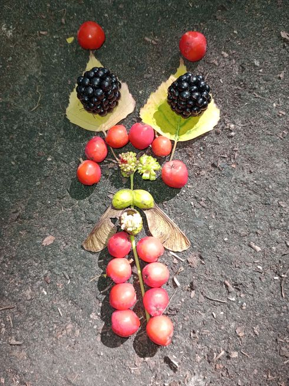
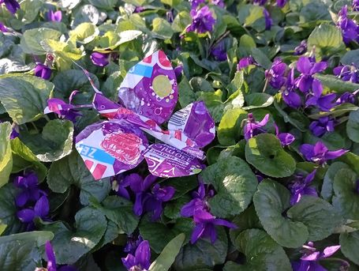
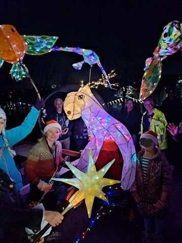
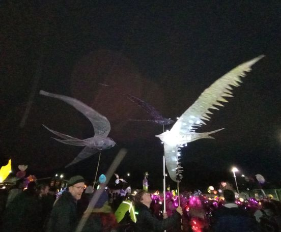
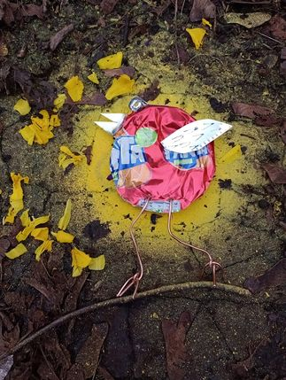
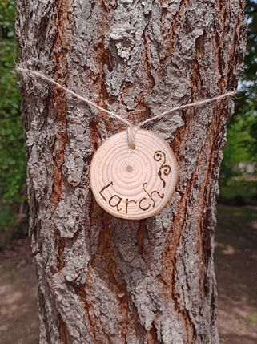
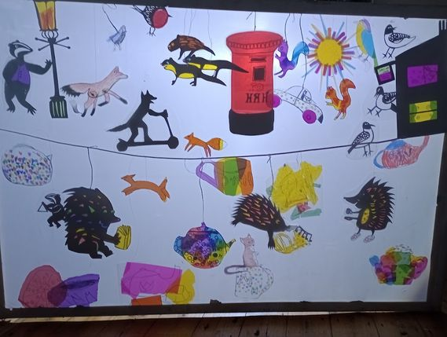
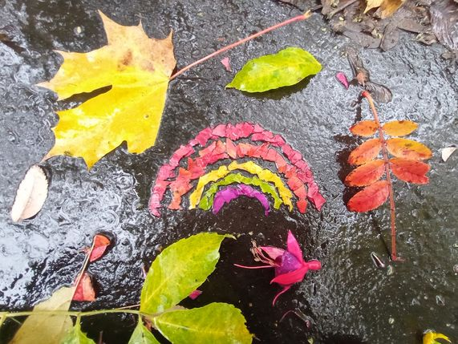
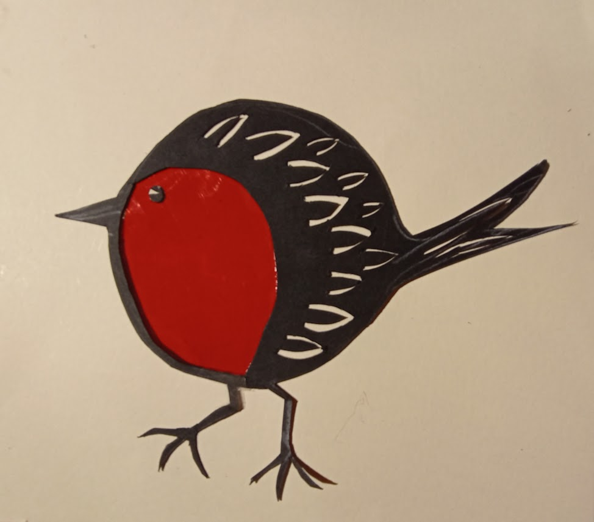
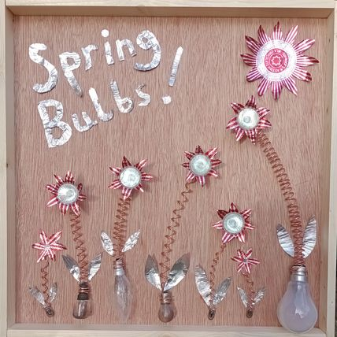
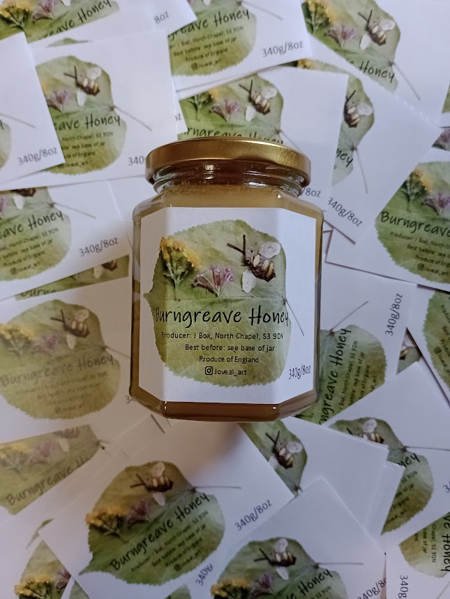
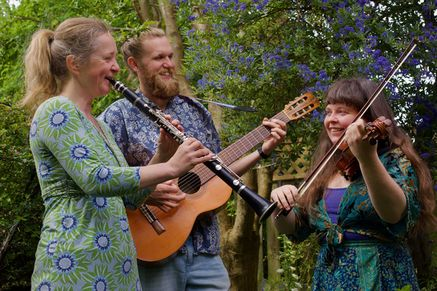
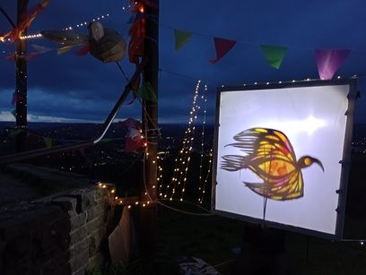
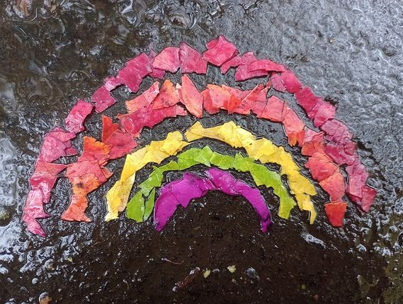
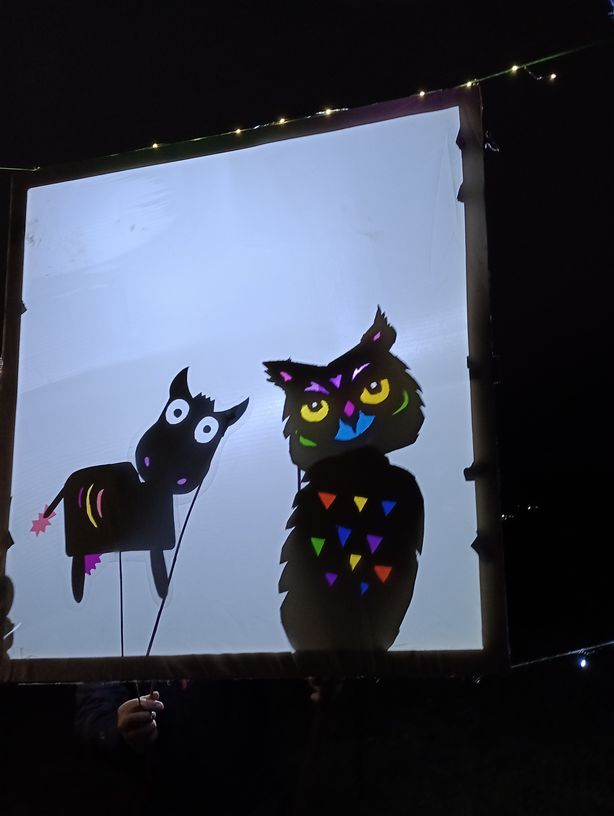
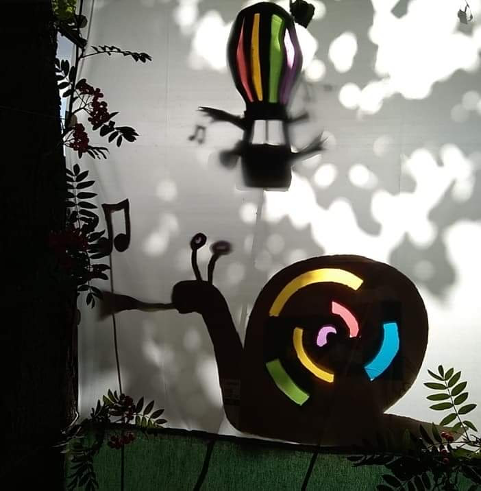
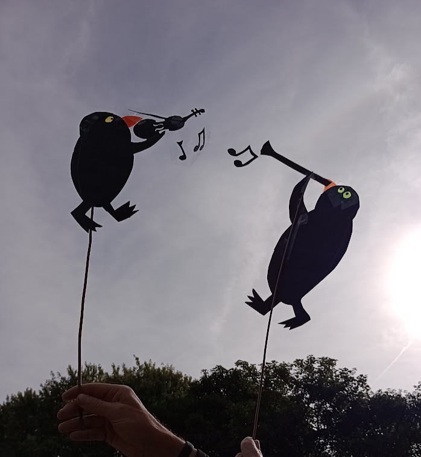
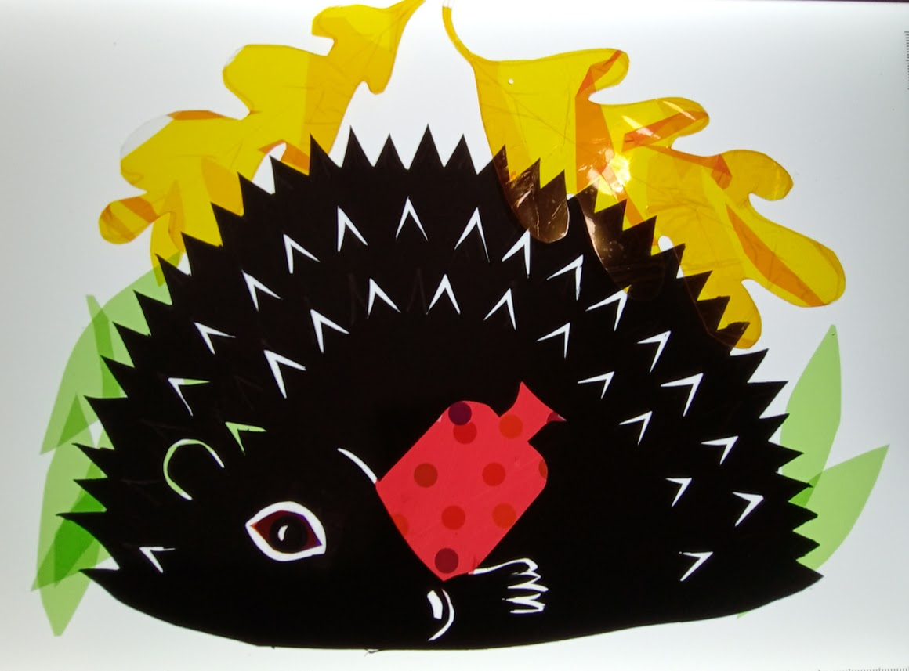
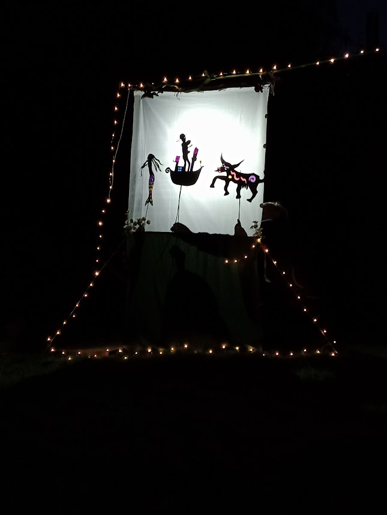
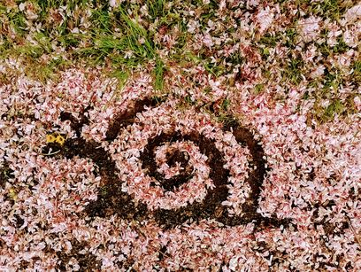
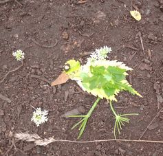
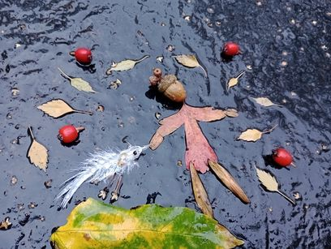
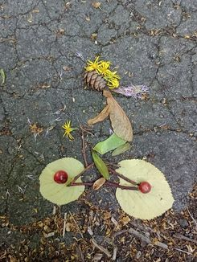
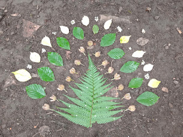
created with
HTML Builder .